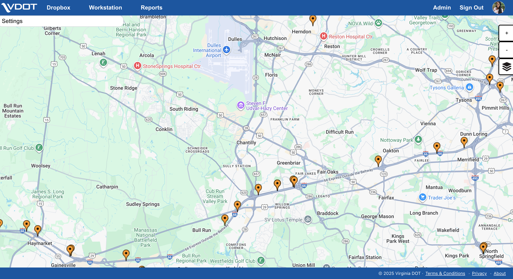
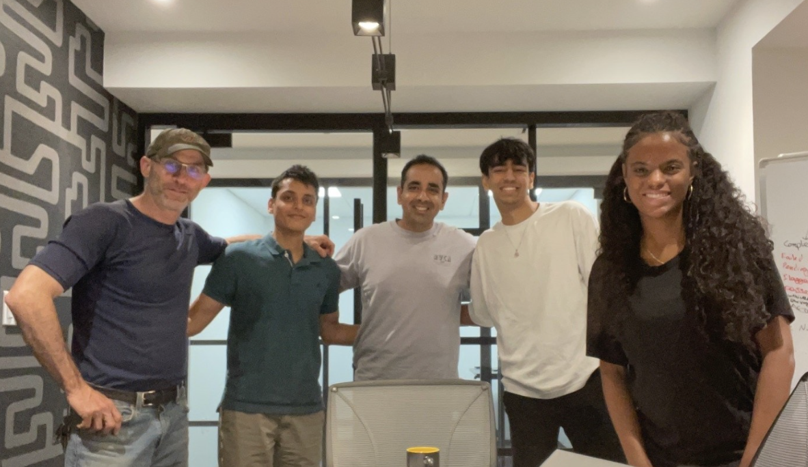

District managers were making million-dollar maintenance decisions with no real-time visibility into what was happening in the field. I designed a scanning-first dashboard that surfaces what's urgent in the first 10 seconds — no digging required.

District managers need to oversee inspection backlogs, identify urgent maintenance work, and coordinate field teams across regions — all while pulling data from multiple disconnected systems. There was no centralized view. Decisions were being made based on scattered spreadsheets and manual data aggregation.
Meanwhile, field inspectors (on the mobile side of this system) were completing ratings that had no real-time path to the people who needed to act on them. The information gap between field and office was a design problem, not just a data problem.
Part of a connected system
This dashboard is the office-side of the same system as the Field Inspection App. The design decisions on each side were made in relation to the other — they're not two separate products.
District managers don't read dashboards — they scan them. That single behavioral insight drove the entire information architecture.
Key insight
I designed for a morning check-in workflow: the manager opens the dashboard and needs to know in under 10 seconds what is urgent, what is on track, and what needs attention. Everything else is secondary.
I conducted cognitive walkthroughs modeling the scanning behavior of district managers, and analyzed how comparable operational dashboards (utilities management, fleet operations) structured urgency signals for experienced users who scan rather than read.
Managers open the dashboard to triage — they need to know immediately what's behind schedule or flagged, not browse through all regions equally.
Urgency indicators and backlog counts are visually dominant in the layout. Neutral status fades to the background so exceptions stand out without scanning the whole screen.
Managers already use a "red/yellow/green" verbal shorthand when discussing work status with their teams. This is an existing mental model, not a color convention imposed by design.
Status indicators use a traffic light pattern because it maps to how these users already think and communicate about priorities — no new mental model to learn.
Different users need different default views from the same data. District managers need high-level status; operations coordinators need assignment queues.
Role-based configurations share a consistent navigation shell but surface different default views and data emphasis based on the user's primary workflow.
What I chose: A layout where urgency signals are dominant and detail is accessed through progressive drill-down.
Why: Dashboard users don't start at the top and read down — they search for the thing that needs attention. The visual weight of elements needed to reflect the priority of the information, not the breadth of available data.
What I rejected: Equal visual weight across all regions and metrics, which buried urgent items in a sea of normal-status information.
What I chose: Numerical counts with directional indicators (backlog growing vs. clearing) as the primary backlog representation.
Why: In testing, numerical counts with trend direction gave managers the fastest time-to-understanding for "is this getting better or worse?" — faster than bar charts or heat maps for this specific decision context.
What I rejected: Heat maps (useful for spatial analysis, slower for status triage) and pure bar charts (less intuitive for trend direction at a glance).
What I chose: Consistent navigation architecture with role-configured default views and data emphasis.
Why: Separate interfaces per role would create maintenance overhead and fragment the team's shared situational awareness. A unified shell with role-based defaults lets users switch context without losing orientation.
What I rejected: A single fixed view that tried to serve all roles simultaneously — which served none of them optimally.
[PLACEHOLDER: Dashboard screenshot with visual hierarchy annotations — scanning zones, urgency indicators, progressive drill-down callouts]
The mobile app and dashboard aren't separate products — data flows from the inspector's field entries directly into the manager's operational view. I designed this connection deliberately:
This last point was a real constraint: field connectivity is unreliable, so I designed for offline-first data capture on the mobile side with sync-when-available. The dashboard's last-synced indicators give managers the context to make good decisions even when data isn't fully real-time.
[PLACEHOLDER: Diagram showing field app → backend → dashboard data flow with UX touchpoints at each stage]
I was the sole UX designer on a cross-functional Alpha Team at Leidos: a Product Manager, Solutions Architect, Software Engineer, and Engineering Intern.
For the dashboard specifically, I worked closely with the Solutions Architect on the data model constraints that shaped what was feasible to surface in real-time, and facilitated working sessions with VDOT district managers to validate the scanning hierarchy and role-based view decisions.
